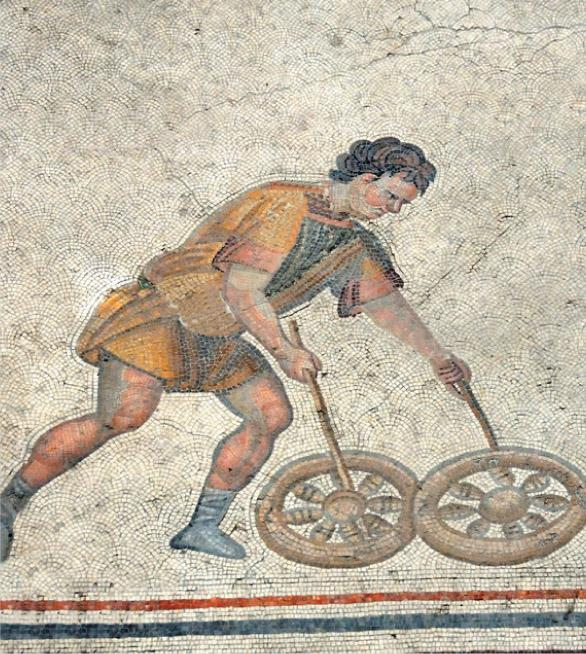
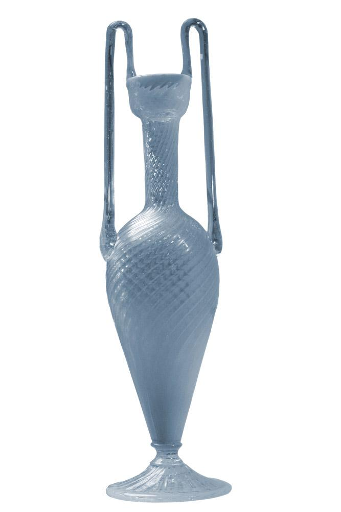
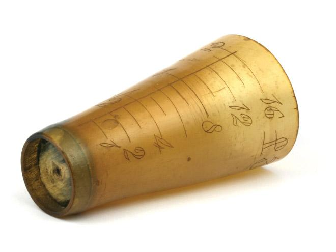
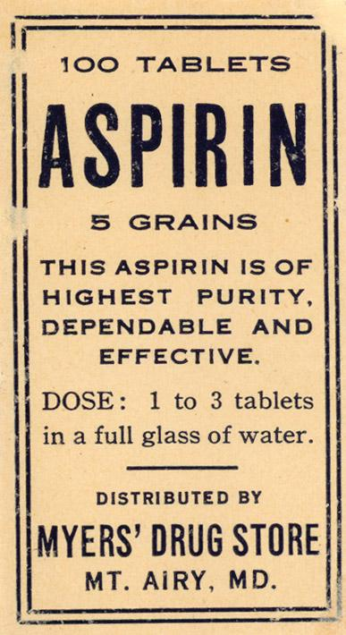
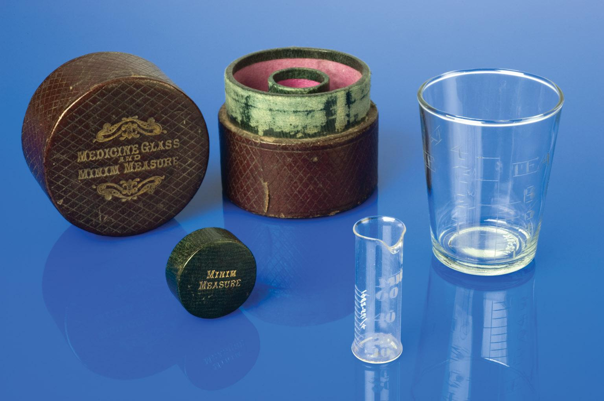
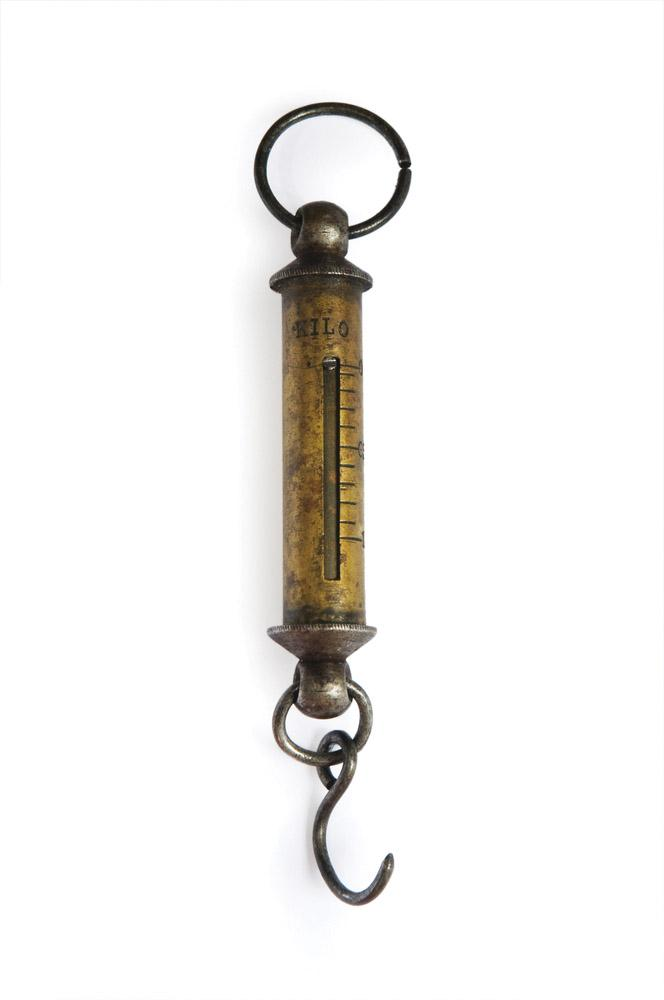
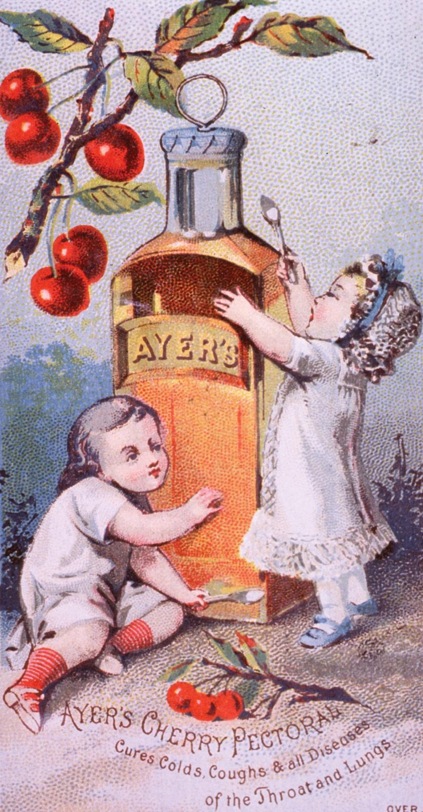
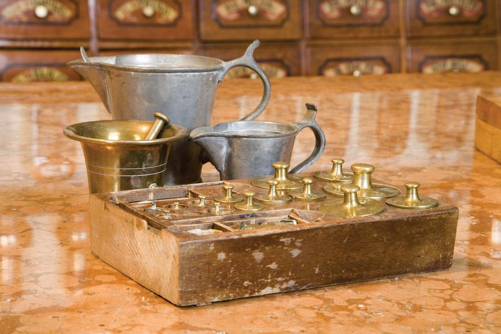
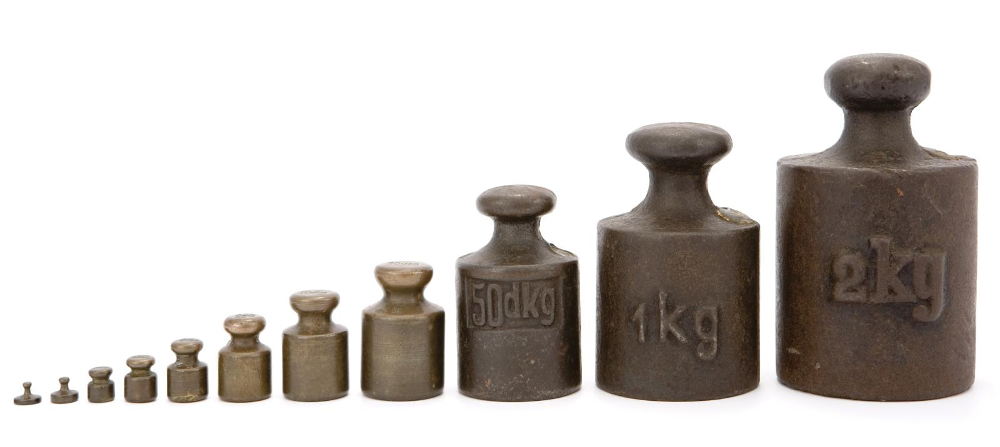

7.1 Historical Introduction

In ancient cultures, the formulas used to prepare medicinal compounds were based on recipes that had been passed down orally through the generations. Apothecaries, alchemists, and other healers prepared many of these recipes from memory, although some were written down and stored in formularies. Early compounding procedures were based on the trial-and-error mixing of crude drugs, such as opium, with other plant-based products or homemade tinctures. The ingredients used in compounding recipes, along with the mixed preparations themselves, were unregulated for identity, quality, purity, strength, and side effects, and the methods used to measure the ingredients tended to vary greatly based on who was preparing the medicinal compounds.
Origins of Measurement
Units of measurement are one of humankind’s oldest attempts at creating a standardized means of determining quantity. To measure length, the ancient Egyptians created a unit called the cubit, which was equal to the length of a forearm from the elbow to the middle finger. To the same end, the Romans created the mille passus, a unit of length equal to 1,000 paces (where each pace was the length of 5 human feet).
To measure weight, many ancient civilizations relied on a measurement known as a talent, which was based on the weight of the water required to fill a large ceramic vessel called an amphora. Depending on the culture, the weight of the talent, measured in pounds (lb), varied: The Greek talent weighed 57 lb; the Egyptian talent, 60 lb; the Babylonian talent, 67 lb; and the Roman talent, 71 lb. When it came to weighing lighter objects, stones and seeds were common reference points, whereas gourds and other containers were often used to measure volume.

While inconsistent measurement units may not have toppled ancient empires, disciplines such as medicine and chemistry that required precise measurements did suffer, both in everyday compounding practices and in sharing consistent measurement information across cultures. Consequently, early scientists worked to create uniform systems of measurements that could advance their research and produce the intended results.
Early Systems of Pharmaceutical Measurement
Prior to the late 1700s, it was common for apothecaries, pharmacists, physicians, and other healthcare professionals to use several different systems of measurement when compounding medications—the most well-known of which are the apothecary, avoirdupois, and household systems. These systems are virtually obsolete in the practice of modern-day dosage calculations. However, the household system is still occasionally used by prescribers, and many of the original units of measure from these early systems are still in use today.
The apothecary system of measurement is one of the oldest measurement systems and is based on the classical weight system developed by the Romans. The apothecary system includes units of measurement such as the dram, which is roughly equivalent to 4 milliliters (mL), and the scruple, which is roughly equivalent to 1.3 grams (g). Although the apothecary system did help establish some units of measurement still in use today—such as the ounce (oz), pint (pt), quart (qt), and gallon (gal)—the modern equivalencies of these units of measurement have changed.

The avoirdupois system of measurement, which originated in France, has been used in the United States to varying degrees since colonization and remains the “everyday” measurement system in this country. The name of the system comes from the French term aveir de peis, or “goods of weight,” which referred to products sold in bulk that had to be weighed to determine their value.
The avoirdupois system is based on units such as feet (ft), miles (mi), and pounds (lb) but also contains more obscure units of measure, such as the grain (gr). The pound (lb), a unit weighing 16 ounces (oz), was created in London in 1303 and then standardized as 7,000 grains by Henry VIII in the 1500s. The grain, as its name suggests, is based on the weight of a single seed from grains such as wheat or barley. Some form of this unit has been used by nearly every culture in recorded history.

View long description Hide description
The label reads as follows:
100 tablets Aspirin 5 grains. This aspirin is of highest purity. Dependable and effective. Dose: 1 to 3 tablets in a full glass of water. Distributed by Myer’s drug store, M T. A I R Y, M D.

The household system of measurement is based on the apothecary system and was created to assist patients taking medications at home. Common dry units of this system are the ounce and the pound; common liquid units include the drop, teaspoon, tablespoon, and cup; and obscure volume units include the jigger and the hogshead. In the United States, the food industry and some areas of pharmacy still use the household system, despite its inequivalencies and lack of uniformity.
The major problem for most early systems of pharmaceutical measurement was equivalency. Because no standard equivalencies were established among the apothecary, avoirdupois, and household systems prior to the 19th century, pharmacies relying on different measurement systems tended to produce widely differing doses for patients. For example, if a pharmacy received an order to compound 1 lb of a cream, the pharmacist would prepare 12 oz under the apothecary system, 16 oz under the avoirdupois system, and “a pound” under the household system. These inconsistencies often led to dangerous differences between a physician’s prescription and the pharmacy’s compounded preparation.
Pharmaceutical Measurement Tools
Another source of dosage inaccuracies stemmed from the measurement tools used by early apothecaries and healers. The scale is one example of a device that, for thousands of years, has been used to weigh compounding ingredients. It is still used in pharmacy practice today. However, its accuracy depends on several variables, including the type of scale, the placement of the weights, the calibration and adjustment of the scale, and the environment.
A balance scale has been in use since at least 2400 BCE, and its descendant models are still relied on today in scientific and pharmaceutical industries. A balance scale consists of a horizontal beam placed across a point, or fulcrum, so that the scale sits perfectly level. Plates are attached to either side of the beam. The object to be weighed is placed on one plate, and weight references (objects whose weights are known) are added to the other plate until the two sides of the beam are balanced. Although highly effective and extremely accurate when properly maintained, a balance scale requires a perfectly frictionless fulcrum to operate properly. Another drawback to a balance scale is that it only works as a reference scale, meaning it only gives a measurement relative to the weights used to balance the scale, and the measurement is accurate only to the extent that the reference weights are accurate.
The spring scale, which measures the weight of an object hanging from the bottom of a spring, gained popularity in the 1800s. The spring’s stretch, combined with knowledge of elasticity and gravity, allow weights to be measured much more quickly than with a balance scale. However, a spring scale is less accurate and more susceptible to environmental influences, such as temperature and even gravitational force, which vary across regions and affect the spring’s strength. Today, spring scales are used mainly in industrial settings for large loads.
Two types of balances are used to accurately deliver weight measurements in contemporary pharmacy practice: a Class III torsion prescription balance and a top-loading electronic balance. A Class III torsion prescription balance utilizes a two-pan torsion system that requires both internal and external weights. Accurate, durable, and easy to use, a Class III torsion prescription balance may only be used to weigh masses ≥ 120 mg depending on the balance and typically no more than 60 g or 120 g. Anything outside of these ranges cannot be accurately weighed on this type of balance.

An electronic balance is typically used to weigh small masses because of its precision. One type of electronic balance, called an analytical balance, can measure a mass ≥ 4 mg. Detailed information about both balances used in the pharmacy setting can be found in the USP General Chapter <1176> Prescription Balances and Volumetric Apparatus Used in Compounding.
Inconsistent Calculation Methods
While equivalency and measurement tools were main sources of error in early pharmacy compounding, inconsistent calculating methods also caused problems. For example, physicians and pharmacists well into the 20th century used at least four different methods to calculate children’s dosages. These calculation methods, based on simple equations, were known as “rules” and included Clark’s Rule, Fried’s Rule, Cowling’s Rule, and Young’s Rule (see Table 7.1). Clark’s Rule took a child’s weight in pounds, multiplied by the adult dosage, and then divided the product of this equation by 150. Fried’s Rule was nearly identical but, because it was designed for infants, required a child’s age in months rather than a child’s weight in pounds. Both Cowling’s Rule and Young’s Rule used a child’s age in the equations. These rules were inconsistently applied and used variables such as age that were not appropriate for determining dosage.
| Clark’s Rule | states: | \[ \frac{\text{child's weight (in lb)} \times \text{adult dose}}{150} \] |
= child’s dose |
|---|---|---|---|
| and, for this example, results in: | \[ \frac{50 \times 600\;\text{mg}}{150} \] |
= 200 mg | |
| Cowling’s Rule | states: | \[ \frac{\text{child's age (in years) at next birthday} \times \text{adult dose}}{24} \] |
= child’s dose |
| and, for this example, results in: | \[ \frac{7 \times 600\;\text{mg}}{24} \] |
= 175 mg | |
| Fried’s Rule | states: | \[ \frac{\text{child's age (in months)} \times \text{adult dose}}{150} \] |
= child’s dose |
| and, for this example, results in: | \[ \frac{72 \times 600\;\text{mg}}{150} \] |
= 288 mg | |
| Young’s Rule | states: | \[ \frac{\text{child's age (in years)} \times \text{adult dose}}{\text{child's age (in years)} + 12} \] |
= child’s dose |
| and, for this example, results in: | \[ \frac{6 \times 600\;\text{mg}}{6 + 12} \] |
= 200 mg |

Metrication
The metric system was introduced in France in 1799 in response to the need for a standardized system of measurement that could be used internationally. The main advantage of the metric system is that it uses a group of base units (such as meters [m], liters [L], and grams [g]) in conjunction with a set of prefixes (such as deci−, centi−, and milli−) that represent different powers of 10. The prefixes are used to modify all of the base units in the system, which means the user only needs to know a few terms to be able to understand many measurements.
Over the next two centuries, the metric system was gradually adopted by countries across the world. Today, this system of measurement standardizes and greatly simplifies international commerce and communication, especially in the areas of science and technology. Still, many of these countries continue to use traditional measurements in areas such as construction, plumbing, and human weight.
Three countries have not adopted the metric system as a standard system of measurement: Liberia, Myanmar, and the United States. However, the United States does use this international system in a number of scientific fields, including pharmacy practice.
Regulation and Standardization in Pharmacy Practice
Prior to the 1800s, pharmacy practice was mostly unregulated in the United States. Pharmacists were not required to complete any formal education or training programs, and the substances and methods they used to prepare medications were uncontrolled. Differences in systems of measurement and calculation, combined with chemicals and drugs of inconsistent strength, purity, and quality, led to inaccurate, ineffective, and often harmful medication dosing. For example, when prescribing opium—a common remedy for pain, sleeplessness, and diarrhea used worldwide well into the 19th century—physicians did not distinguish between the various plant species or by what methods the extract would be created. As a result, pharmacists often prepared and administered doses that were too weak or, even worse, too strong.
By 1880, individual states began to create pharmacy boards to oversee pharmacists and their practice. Thus, pharmacy practice began to transform from an art based on old and often unproven or imprecise recipes into a more exact science. In 1821, the Philadelphia College of Pharmacy became the first US college to offer an advanced degree in pharmaceutical science. The transition to a scientific approach to pharmacy practice, coupled with the USP’s inclusion of metric weights and measures in 1870, laid the foundation for current pharmacy operations. However, some of the approximate equivalents from other systems of measurement continue to be used as well.

In 1906, the Pure Food and Drug Act became the first federal law to indirectly affect pharmacy practice. This law required food and drug manufacturers to provide unadulterated products and accurate label information. In 1938, the Federal Food, Drug, and Cosmetic (FD&C) Act provided the first direct regulation of pharmacy practice by requiring that new drugs be proven effective before they could be marketed to the public. Since then, numerous amendments to the FD&C Act have helped to standardize drug formulations and labeling as well as to ensure the identity, strength, purity, and quality of medications.
Advancements in medicine and pharmacy—supplemented by the implementation of federal laws governing the creation, preparation, and compounding of medications—also led to the standardization of medication dosing. The mathematical formulas discussed in this chapter are a major part of this standardization. The children’s dosage calculation “rules” that led to dangerous variations among children’s doses are now considered obsolete and have been replaced by more accurate methods of dosing. Today, prescribers determine the desired dose of each parenteral medication for both children and adults based on either a patient’s body weight or body surface area (BSA) along with other relevant information (such as kidney or liver function or disease state). BSA is often used when calculating dosages for chemotherapy—a topic addressed in Chapter 16 of this textbook.
Today’s sterile compounding personnel need to be able to read and understand medication orders, ingredient information on manufacturers’ labels, and pharmacy-printed compounded sterile preparation (CSP) labels. They then perform calculations, some of which are based on conversion factors, to determine the amount of each ingredient needed to prepare various sterile preparations. Sterile compounding personnel also use other calculation methods such as ratio and proportion, dimensional analysis, and alligation to determine quantities such as diluent volumes, drug concentrations, and the amount of each drug that must be drawn up to prepare CSPs. The precise nature of these calculation methods—in conjunction with the use of standard systems of measurement and controlled, regulated ingredients—ensure that each patient receives the correct dosage of medication.
